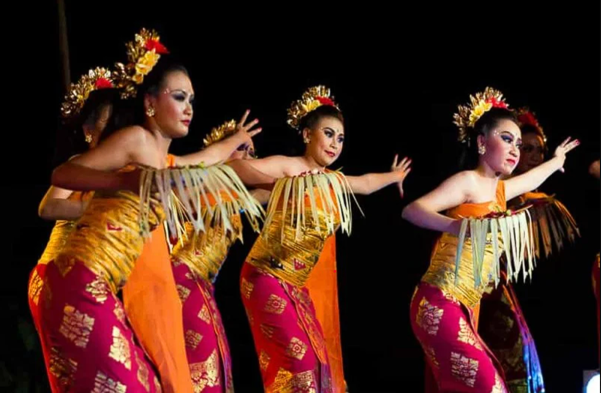
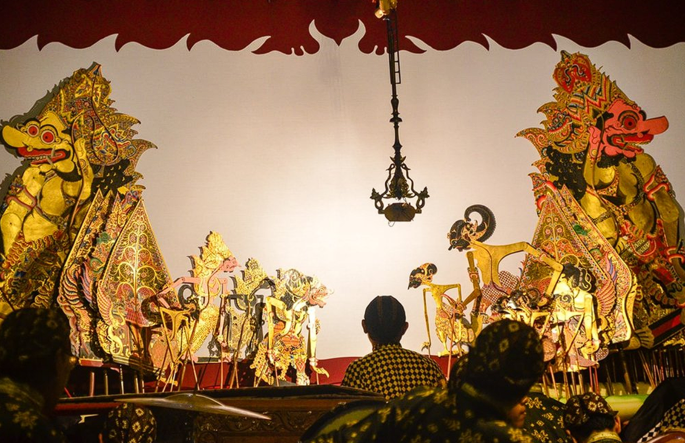
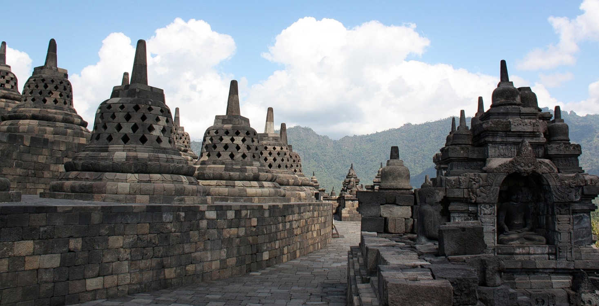
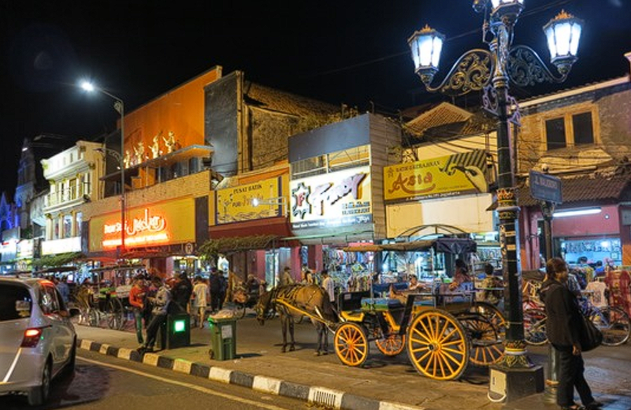
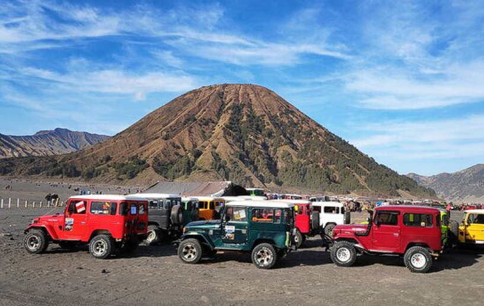

Indonesia memang memiliki keindahan alam yang luar biasa, keanekaragaman budaya yang kaya, dan berbagai pilihan akomodasi yang mengagumkan. Berikut adalah beberapa hal menarik tentang Indonesia dalam konteks ini:
Kebudayaan Indonesia
Indonesia dikenal dengan keanekaragaman budaya yang kaya dan menarik. Berikut adalah beberapa elemen kebudayaan yang istimewa:
Tarian Tradisional
Salah satu contoh tarian tradisional yang terkenal di Indonesia adalah Tari Pendet dari Bali. Tarian ini biasanya digunakan untuk menyambut tamu istimewa atau sebagai ungkapan rasa syukur dalam upacara adat.
Upacara Adat
Upacara adat di Indonesia sangat beragam dan kaya akan nilai-nilai tradisional. Contohnya, Upacara Ma’Nene di Toraja merupakan ritual pemakaman unik yang dilakukan setiap beberapa tahun sekali, di mana jenazah yang sudah dimakamkan diambil kembali untuk diberi pakaian baru dan diselenggarakan upacara penghormatan kembali.

Tradisi Unik
Salah satu tradisi unik di Indonesia adalah Perayaan Nyepi di Bali. Nyepi adalah hari raya Hindu yang sakral di mana seluruh pulau Bali merayakannya dengan diam total. Selama Nyepi, penduduk Bali menjalankan tradisi "Catur Brata Penyepian" yang mencakup amati geni (tidak melakukan api), amati karya (tidak melakukan pekerjaan), amati lelungan (tidak melakukan hiburan), dan amati lelanguan (tidak melakukan perjalanan).

Wayang Jawa
Wayang Jawa adalah salah satu kesenian tradisional yang sangat terkenal di Indonesia, khususnya di Pulau Jawa. Wayang kulit adalah jenis wayang yang paling terkenal dan sering dipentaskan dalam acara-acara tradisional. Wayang kulit biasanya menceritakan kisah-kisah epik seperti Ramayana dan Mahabharata yang disampaikan melalui permainan bayangan dari kulit yang dipotong dan diukir dengan teliti.
Tempat Wisata Terbaik di Indonesia
Berikut adalah beberapa tempat wisata terkenal dan indah di Indonesia:
Pulau Komodo
Pulau ini terkenal dengan populasi hewan purba yang unik, yaitu komodo, yang merupakan kadal terbesar di dunia. Pulau Komodo merupakan bagian dari Taman Nasional Komodo yang juga meliputi beberapa pulau lainnya di sekitarnya. Selain komodo, keindahan bawah laut di sekitar Pulau Komodo juga sangat menakjubkan, menjadikannya destinasi utama bagi pecinta alam dan penyelam.

Borobudur
Borobudur adalah candi Budha terbesar di dunia dan merupakan salah satu warisan budaya Indonesia yang paling terkenal. Candi ini terletak di Magelang, Jawa Tengah, dan dibangun pada abad ke-9 oleh dinasti Syailendra. Borobudur terdiri dari sembilan tingkat yang terhampar berbentuk piramida, dengan lebih dari 2.500 relief dan 500 stupa yang menggambarkan ajaran Budha.
Raja Ampat
Raja Ampat adalah gugusan kepulauan yang terletak di ujung barat Papua, Indonesia. Kepulauan ini terkenal karena keindahan alam bawah lautnya yang menakjubkan. Raja Ampat menjadi salah satu tempat terbaik di dunia untuk menyelam dan snorkeling karena keanekaragaman hayati lautnya yang luar biasa. Terumbu karang yang sehat, berbagai spesies ikan, dan pemandangan bawah laut yang spektakuler menjadikan Raja Ampat destinasi yang sangat dicari oleh para penyelam dan pecinta alam.

Patung Garuda Wisnu Kencana
Merupakan patung monumental yang menggambarkan Dewa Wisnu yang sedang naik di atas Garuda, burung mitos yang menjadi kendaraannya. Patung ini merupakan salah satu yang tertinggi di dunia, dengan tinggi sekitar 121 meter.

Malioboro
Jalan Malioboro adalah jalan utama di pusat kota Yogyakarta yang terkenal dengan aktivitas belanja, kuliner, dan kehidupan malamnya. Jalan ini panjangnya sekitar 1 kilometer dan biasanya sangat ramai dengan wisatawan dan pengunjung lokal.
Monumen Nasional (Monas)
Monumen Nasional atau yang lebih dikenal dengan sebutan Monas adalah ikon dari Kota Jakarta. Monas adalah sebuah monumen yang didirikan untuk mengenang perjuangan rakyat Indonesia dalam merebut kemerdekaan dari penjajah. Monumen ini memiliki tinggi sekitar 132 meter dan terletak di Lapangan Medan Merdeka, Jakarta Pusat.
.png)
Bromo
Gunung Bromo atau dalam bahasa Tengger dieja "Brama", juga disebut Kaldera Tengger, adalah sebuah gunung berapi aktif di Jawa Timur, Indonesia. Gunung ini memiliki ketinggian 2.329 meter di atas permukaan laut dan berada dalam empat wilayah kabupaten, yakni Kabupaten Probolinggo, Kabupaten Pasuruan, Kabupaten Lumajang, dan Kabupaten Malang.
Daftar Hotel Terbaik di Indonesia
Berikut adalah beberapa pilihan hotel terbaik di Indonesia:
AYANA Resort and Spa Bali
Alamat: Jimbaran, Bali
Fasilitas: Pantai pribadi, kolam renang infinity, spa terkenal (Thermes Marins Bali Spa), berbagai restoran dan bar, klub malam, pusat kebugaran, lapangan golf, akses ke Rock Bar Bali.
Harga: Mulai dari sekitar Rp 4.000.000 per malam

The Lombok Lodge
Alamat: Medana Beach, Lombok Utara
Fasilitas: Pantai pribadi, kolam renang infinity, spa mewah (The Lodge Spa), restoran gourmet, akses ke Gili Islands dengan cepat.
Harga:Mulai dari sekitar Rp 5.000.000 per malam

Plataran Borobudur Resort & Spa
Alamat: Dusun Tanjungan, Borobudur, Magelang (sekitar 1 jam dari Yogyakarta)
Fasilitas: Kolam renang outdoor dengan pemandangan Borobudur, spa (Padma Spa), restoran dengan menu lokal dan internasional, akses ke Candi Borobudur.
Harga:Mulai dari sekitar Rp 2.000.000 per malam

Four Seasons Hotel Jakarta
Alamat: Jl. Jend. Gatot Subroto Kav. 18, Jakarta Selatan
Fasilitas: Kolam renang outdoor, spa (The Spa), klub kesehatan, restoran dan bar bergaya, pusat bisnis.
Harga:Mulai dari sekitar Rp 4.000.000 per malam

Hotel Crowne Plaza Semarang
Alamat: Jl. Pemuda No. 118, Semarang, Jawa Tengah, Indonesia
Fasilitas: Hotel Crowne Plaza Semarang terletak di pusat kota Semarang, menawarkan kamar yang nyaman dilengkapi dengan AC, TV layar datar, dan area kerja. Fasilitas lainnya meliputi restoran dan bar dengan pilihan makanan dan minuman, kolam renang untuk bersantai, ruang rapat dan pusat bisnis, serta gym dan layanan spa untuk kebugaran dan relaksasi tamu hotel.
Harga:Mulai dari sekitar Rp 2.000.000 per malam